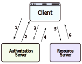

OAuth 2.0, что означает «Открытая авторизация», представляет собой фреймворк, предназначенный для предоставления согласованного доступа к ресурсам от имени пользователя без передачи учетных данных пользователя. OAuth 2.0 — это протокол авторизации, а не протокол аутентификации, он разработан в первую очередь как средство предоставления доступа к набору ресурсов, например, к удаленным API или данным пользователя.
OAuth 2.0 заменяет и упраздняет протокол OAuth 1.0, описанный в RFC-5849.
Протокол OAuth 2.0 определяет следующие объекты:
Проще говоря, получаем резрешение на авторизацию (грант), обмениваем этот грант на токен доступа, с этим токеном доступа запрашиваем нужный нам ресурс
Как отмечалось выше, чаще всего сервер авторизации выступает в качестве посредника при получении разрешения на авторизацию. Ниже представлена схема для этого случая.

Вот наиболее распространенные недостатки OAuth 2.0:
OAuth 2.0 предназначен только для авторизации, для предоставления доступа к данным и функциям из одного приложения в другое. OpenID Connect Connect (OIDC) — это тонкий слой, который находится поверх OAuth 2.0 и добавляет информацию о входе в систему и профиле пользователя, вошедшего в систему.
Когда сервер авторизации поддерживает OIDC, его иногда называют поставщиком удостоверений (IdP), поскольку он предоставляет информацию о владельце ресурса обратно клиенту. OpenID Connect является относительно новым, что приводит к более низкому внедрению и внедрению в отрасли лучших практик по сравнению с OAuth.
Протокол OpenID Connect (OIDC) определяет следующие сущности:
И OAuth 2.0, и OIDC просты в реализации и основаны на JSON, который поддерживается большинством веб-приложений и мобильных приложений. Однако спецификация OpenID Connect (OIDC) более строгая, чем спецификация базового OAuth.
Единый вход (SSO) — это процесс проверки подлинности, при котором пользователю предоставляется доступ к нескольким приложениям или веб-сайтам с использованием только одного набора учетных данных для входа. Это избавляет пользователя от необходимости отдельно входить в разные приложения.
Учетные данные пользователя и другая идентифицирующая информация хранятся и управляются централизованной системой, которая называется Identity Provider (IdP). Identity Provider — это надежная система, обеспечивающая доступ к другим веб-сайтам и приложениям.
Системы аутентификации на основе единого входа (SSO) обычно используются в корпоративных средах, где сотрудникам требуется доступ к нескольким приложениям их организаций.
Давайте обсудим некоторые ключевые компоненты единого входа (SSO).
Информация об удостоверении пользователя хранится и управляется централизованной системой, называемой поставщиком удостоверений (IdP). Поставщик удостоверений аутентифицирует пользователя и предоставляет доступ поставщику услуг.
Поставщик удостоверений может напрямую аутентифицировать пользователя, проверив имя пользователя и пароль или проверив утверждение об удостоверении пользователя, представленное отдельным поставщиком удостоверений. Поставщик удостоверений занимается управлением идентификаторами пользователей, чтобы освободить поставщика услуг от этой ответственности.
Поставщик услуг предоставляет услуги конечному пользователю. Они полагаются на поставщиков удостоверений для подтверждения личности пользователя, и обычно некоторые атрибуты пользователя управляются поставщиком удостоверений. Поставщики услуг также могут поддерживать локальную учетную запись для пользователя вместе с атрибутами, уникальными для их службы.
Брокер удостоверений действует как посредник, который соединяет несколько поставщиков услуг с различными поставщиками удостоверений. Используя Identity Broker, мы можем выполнять единый вход в любое приложение без проблем с протоколом, которому оно следует.
Язык разметки утверждений безопасности — это открытый стандарт, который позволяет клиентам обмениваться информацией о безопасности, касающейся удостоверений, аутентификации и разрешений, в разных системах. SAML реализован со стандартом Extensible Markup Language (XML) для обмена данными.
SAML специально обеспечивает федерацию удостоверений, позволяя поставщикам удостоверений (IdP) беспрепятственно и безопасно передавать аутентифицированные удостоверения и их атрибуты поставщикам услуг.
Теперь давайте обсудим, как работает единый вход:
Существует много различий между SAML, OAuth и OIDC. SAML использует XML для передачи сообщений, а OAuth и OIDC используют JSON. OAuth упрощает работу, а SAML ориентирован на корпоративную безопасность.
OAuth и OIDC широко используют связь RESTful, поэтому мобильные и современные веб-приложения считают OAuth и OIDC более удобными для пользователя. SAML, с другой стороны, отбрасывает сеансовый файл cookie в браузере, который позволяет пользователю получить доступ к определенным веб-страницам. Это отлично подходит для краткосрочных рабочих нагрузок.
OIDC удобен для разработчиков и проще в реализации, что расширяет варианты использования, для которых он может быть реализован. Его можно довольно быстро реализовать с нуля с помощью свободно доступных библиотек на всех распространенных языках программирования. SAML может быть сложным в установке и обслуживании, с чем хорошо справляются только компании масштаба предприятия.
OpenID Connect — это, по сути, слой поверх инфраструктуры OAuth. Следовательно, он может предложить встроенный уровень разрешений, который просит пользователя согласиться с тем, к чему может получить доступ поставщик услуг. Хотя SAML также может разрешать поток согласия, он достигает этого за счет жесткого кодирования, выполняемого разработчиком, а не как часть его протокола.
Оба этих протокола аутентификации хороши в том, что они делают. Как всегда, многое зависит от наших конкретных вариантов использования и целевой аудитории.
Ниже приведены преимущества использования единого входа:
Вот некоторые недостатки единого входа:
Давайте кратко обсудим некоторые важные протоколы безопасности связи, такие как SSL, TLS и mTLS. Я бы сказал, что с точки зрения проектирования системы в целом эта тема не очень важна, но о ней все равно полезно знать.
SSL расшифровывается как Secure Sockets Layer и относится к протоколу для шифрования и защиты коммуникаций, которые происходят в Интернете. Впервые он был разработан в 1995 году, но с тех пор устарел в пользу TLS (Transport Layer Security).
Большинство основных поставщиков сертификатов по-прежнему называют сертификаты SSL-сертификатами, поэтому соглашение об именах сохраняется.
Первоначально данные в Интернете передавались в виде открытого текста, который любой мог прочитать, если перехватил сообщение. SSL был создан, чтобы решить эту проблему и защитить конфиденциальность пользователей. Шифруя любые данные, которые передаются между пользователем и веб-сервером, SSL также останавливает определенные виды кибератак, не позволяя злоумышленникам подделывать передаваемые данные.
Безопасность транспортного уровня, или TLS, — это широко распространенный протокол безопасности, предназначенный для обеспечения конфиденциальности и защиты данных при обмене данными через Интернет. TLS произошел от предыдущего протокола шифрования под названием Secure Sockets Layer (SSL). Основной вариант использования TLS — шифрование связи между веб-приложениями и серверами.
Протокол TLS состоит из трех основных компонентов:
Mutual TLS или mTLS — это метод взаимной аутентификации. mTLS гарантирует, что стороны на каждом конце сетевого соединения являются теми, за кого они себя выдают, проверяя, что они оба имеют правильный закрытый ключ. Информация в соответствующих сертификатах TLS обеспечивает дополнительную проверку.
mTLS помогает обеспечить безопасность и надежность трафика в обоих направлениях между клиентом и сервером. Это обеспечивает дополнительный уровень безопасности для пользователей, которые входят в сеть или приложения организации. Он также проверяет соединения с клиентскими устройствами, которые не следуют процессу входа в систему, например с устройствами Интернета вещей (IoT).
В настоящее время mTLS обычно используется микросервисами или распределенными системами в модели безопасности с нулевым доверием для проверки друг друга.